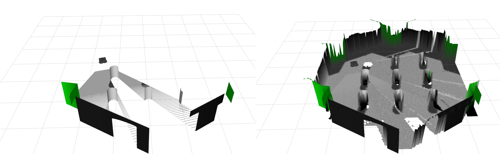

Tutorial
This tutorial covers the launch files that are part of the supported ROS2/Jazzy
surface of the ros2 branch.
If you want to implement your own post-processing layers, refer to Plugins.
Launch the Core Node
The generic launch file accepts a robot-specific config under
config/setups/.
source /opt/ros/jazzy/setup.bash
source ~/ros2_ws/install/setup.bash
ros2 launch elevation_mapping_cupy elevation_mapping.launch.py \
robot_config:=menzi/base.yaml \
launch_rviz:=false
Use a different setup YAML when targeting another robot:
ros2 launch elevation_mapping_cupy elevation_mapping.launch.py \
robot_config:=turtle_bot/turtle_bot_simple.yaml \
launch_rviz:=true
Run the TurtleBot3 Example
Install the simulation packages first:
sudo apt install ros-jazzy-turtlebot3-gazebo ros-jazzy-turtlebot3-teleop
Then launch the TurtleBot3 example:
export TURTLEBOT3_MODEL=waffle
ros2 launch elevation_mapping_cupy elevation_mapping_turtle.launch.py
Open a second terminal to drive the robot:
source /opt/ros/jazzy/setup.bash
source ~/ros2_ws/install/setup.bash
export TURTLEBOT3_MODEL=waffle
ros2 run turtlebot3_teleop teleop_keyboard
The usual teleop bindings apply: w, a, s, d, and x.

Run the Semantic Demos
The semantic workflow is split into two stages:
semantic_sensorgenerates semantic channels from image or pointcloud inputs.elevation_mapping_cupyfuses those channels into map layers.
Pointcloud semantic demo:
ros2 launch elevation_mapping_cupy turtlesim_semantic_pointcloud_example.launch.py
Image semantic demo:
ros2 launch elevation_mapping_cupy turtlesim_semantic_image_example.launch.py
Both launches were restored and revalidated on the ROS2 branch. They require
the semantic_sensor package to be built and sourced, and the image demo may
require a local torchvision install that matches your PyTorch/CUDA build.
Test the Launch Surface
The release process includes explicit checks for the shipped launches. You can run the same coverage locally.
Launch description checks:
ros2 launch elevation_mapping_cupy turtlesim_semantic_image_example.launch.py --print-description
ros2 launch elevation_mapping_cupy turtlesim_semantic_pointcloud_example.launch.py --print-description
Semantic launch tests:
colcon test --packages-select elevation_mapping_cupy \
--ctest-args -R test_semantic_launch_descriptions
Troubleshooting
Missing GPU or libcuda.so.1:
nvidia-smi
python3 -c "import cupy as cp; print(cp.cuda.runtime.getDeviceCount())"
Missing torchvision for the semantic demos:
python3 -m pip install torchvision
DDS discovery problems in integration tests:
ros2 daemon stop
FASTDDS_BUILTIN_TRANSPORTS=UDPv4 python3 -m launch_testing.launch_test \
src/elevation_mapping_cupy/elevation_mapping_cupy/test/test_tf_gridmap_integration.py